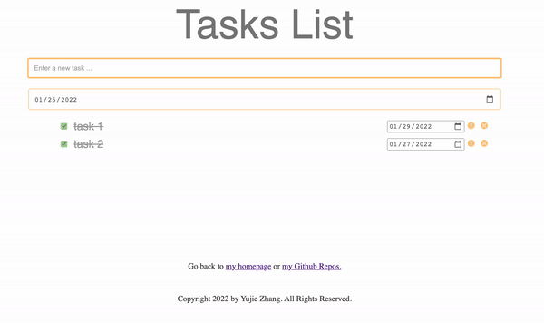

University of California, San Diego
B.S. in Mathematics-Computer Science
Expected March 2022
Programming Languages: Java, Python, HTML/CSS/JavaScript, C/C++
OS: Linux/Unix, Mac, Windows
Databases: MySQL, MongoDB
• Implemented an application to manage multiple tasks.
• User can create, delete, drag-and-drop to order, mark-as-important tasks.
• Users also can add dates on each task. Here is the demo of how to using the tasks list.
• Programming Languages: HTML/CSS/JavaScript
b• Storage: Window.localStorage() Web APIs
• Deployed On GitHub Pages: Link
• Designed an individual-representative system to simulate people’s motion
• Estimated room capacity by moving people while keeping minimum distance with others
• Programming Languages: Python
• Will contribute our report to an academic conference
• Implemented the connect-four game between a computer player and a human player
• Provided multiple difficult levels from random move to best move (mini-max algorithm)
• Programming Languages: C
• Implemented the Graph class, which consists of edges and vertices
• Supported counting nodes, edges; adding weights to edges; finding shortest-path unweighted/weighted, connected components, smallest-connecting-threshold.
• Programming Languages: C++
Aug 2019 - Apr 2020
• Helps Elementary students to review what they learned in daytime
• Hold lectures of Chinese and Math
• Grade their assignment submission
Sept. 2019
• Organized the reception for participants
• In charge of the information desk during the 2 days forum
• Deal with various emergence that may occur
I have a dog name Sam, he is 2 years old. His birthday is June 11th.
Click here to hear my dog say hello with you!